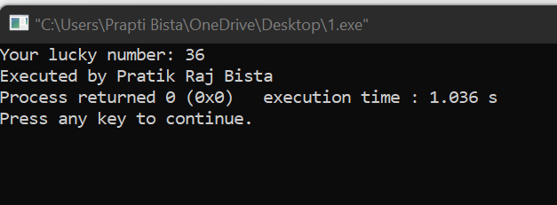
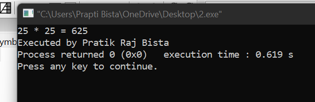
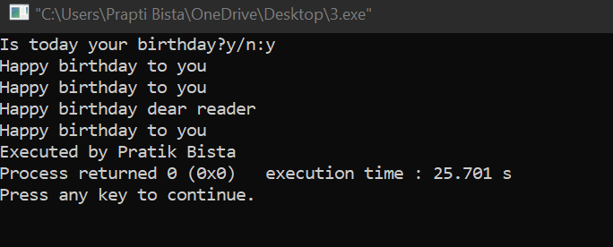
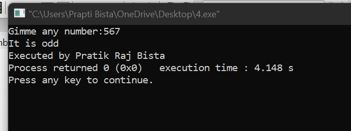
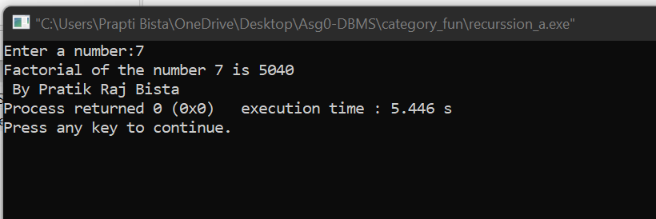
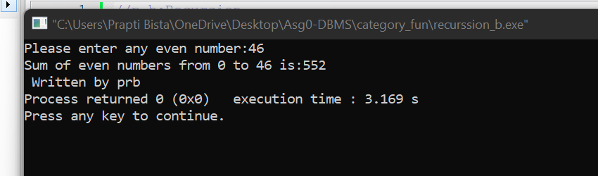
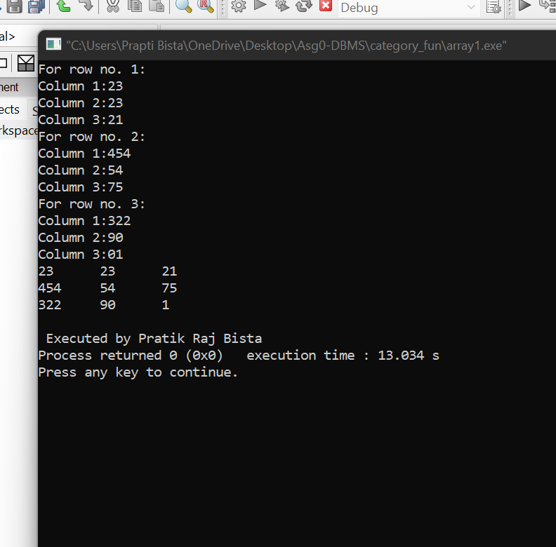
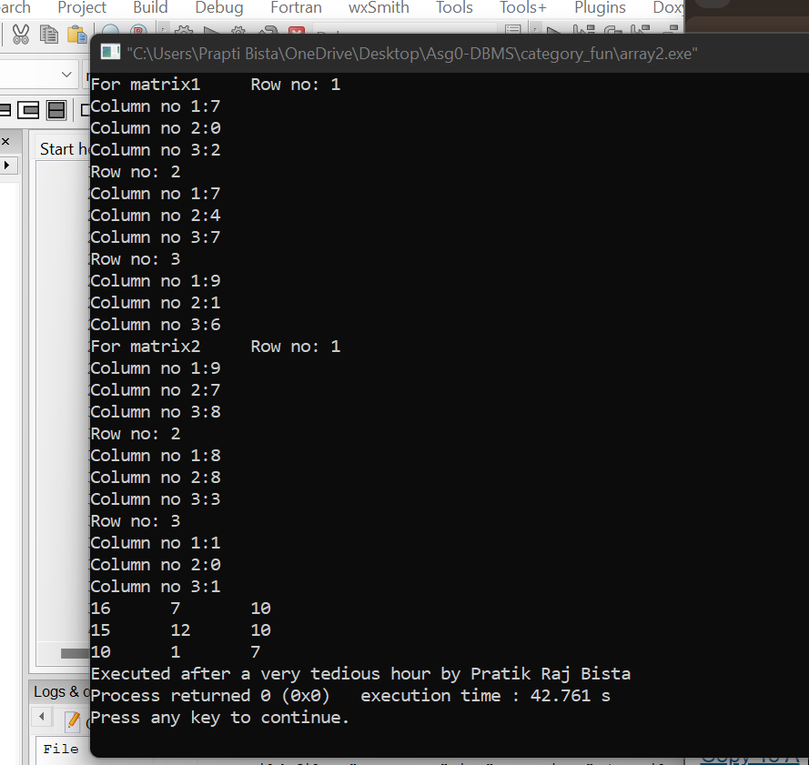

1. Programming in C
Working with a function
1a. Define Function
A function is a self-contained block of code designed to perform a specific task when called in a program.
1b. Syntax of Functions
The basic syntax of a function includes a return type, function name, parameter list, and a body enclosed in braces.
1c. Types of Functions
Functions are mainly classified into library functions (predefined) and user-defined functions (created by the programmer).
1d. Components of Function
Functions consist of several components that define and execute them.
i. Function Prototype
A function prototype declares the function name, return type, and parameters before its actual definition.
ii. Function Call
A function call is used to execute the function by using its name followed by parentheses.
iii. Function Definition
The function definition provides the actual code that is executed when the function is called.
iv. Return Type
The return type specifies the type of value a function will return to the caller.
2. Categories of Function
Functions can be categorized based on whether they take arguments and return values.
i. Function with Return Type but No Arguments
These functions return a value but do not take any parameters.
//p1:return type with no arguments
#include <stdio.h>
int ret();
int main()
{ int a=ret();
printf("Your lucky number: %d \n",a);
printf("Executed by Pratik Raj Bista");
return 0;
}
int ret()
{
return 36;
}

ii. Function with Return Type with Arguments
These functions take parameters and return a value after processing.
//p2: return type with arguments
#include <stdio.h>
int multi(int ,int);
int main()
{
int a=25, b=25, m;
m = multi(a,b);
printf("%d * %d = %d \n", a,b, m);
printf("Executed by Pratik Raj Bista");
return 0;
}
int multi(int x,int y)
{
return(x*y);
}

iii. Function with No Return Type with No Arguments
These functions do not take parameters and do not return a value.
//p3: no return type and no arguments
#include <stdio.h>
void happy(void);
int main()
{
char confirm;
printf("Is today your birthday?y/n:");
scanf("%c", &confirm);
if (confirm=='y')
{
happy();
}
else
{printf("Aw well, then good day sir/madam");}
printf("\nExecuted by Pratik Bista");
return 0;
}
void happy()
{
printf("Happy birthday to you \n");
printf("Happy birthday to you \n");
printf("Happy birthday dear reader \n");
printf("Happy birthday to you");
}

iv. Function with No Return Type with Arguments
These functions take parameters but do not return any value.
//p4: no return type with arguments
#include
void ntype(int);
int main()
{
int n;
printf("Gimme any number:");
scanf("%d", &n);
ntype(n);
printf("\nExecuted by Pratik Raj Bista");
return 0;
}
void ntype(int num)
{
if(num % 2 ==0)
{printf("It is even");}
else
{printf("It is odd");}
}

3. Storage Classes
Storage classes define the scope, lifetime, and visibility of variables in a program.
i. Automatic
Automatic variables are the default local variables created inside functions and destroyed when the function ends.
ii. External
External variables are declared outside all functions and can be accessed by any function in the program.
iii. Register
Register variables are stored in CPU registers for faster access but are limited in number.
iv. Static
Static variables retain their value between multiple function calls and have a local scope.
4. Recursive Function with Syntax and Examples
A recursive function is a function that calls itself directly or indirectly to solve a problem by breaking it into smaller subproblems.
//p_a:Recursion
#include<stdio.h>
int factorial(int);
int main()
{ int num;
printf("Enter a number:");
scanf("%d", &num);
printf("Factorial of the number %d is %d", num, factorial(num));
printf("\n By Pratik Raj Bista");
return 0;
}
int factorial(int n)
{
if(n==0 || n==1)
{return 1;}
else
return n * factorial(n-1);
}

//p_b:Recursion
#include<stdio.h>
int sum(int n)
{
if (n==0)
{return 0;}
else
return n+sum(n-2);
}
int main()
{ int even;
printf("Please enter any even number:");
scanf("%d", & even);
printf("Sum of even numbers from 0 to %d is:%d", even, sum(even));
printf("\n Written by prb");
return 0;
}

Demonstration of passing array to a function
Examples:
// passing array to a function
//p1: display 3x3 matrix
#include
void matrixinput(int [][3]);
//disclose no of dimensions except for the first one
int i,j;
for(i=0; i<3; i++)
{
for(j=0;j<3; j++)
{
printf("%d \t", a[i][j]);
}
printf("\n");
}
}
void matrixinput(int a[3][3])
{
int i,j;
for(i=0; i<3; i++)
{ printf("For row no. %d: \n", i+1);
for(j=0;j<3; j++)
{
printf("Column %d:", j+1);
scanf("%d", &a[i][j]);
}
}
}
int main()
{ int i,j, array[3][3];
matrixinput(array);
matrixprint(array);
printf("\n Executed by Pratik Raj Bista");
return 0;
}

// passing array to a function
//p2: display sum of 3x3 matrix
#include
void input(int [][3]);
void sum(int [][3], int [][3], int [][3]);
void sum(int s[][3], int a[][3],int b[][3])
{
for (int i=0;i<3;i++)
{
for (int j=0;j<3;j++){
s[i][j]= a[i][j]+b[i][j];
printf("%d \t",s[i][j]);
}
printf("\n");
}
}
void input(int in[][3])
{
for (int i=0;i<3;i++)
{ printf("Row no: %d \n", i+1);
for (int j=0;j<3;j++){
printf("Column no %d:", j+1);
scanf("%d", &in[i][j]);
}
}
}
int main()
{
int matrix1[3][3], matrix2[3][3], t[3][3];
printf("For matrix1 \t");
input(matrix1);
printf("For matrix2 \t");
input(matrix2);
sum(t,matrix1,matrix2);
/* NOTE: sum(t,input(matrix1),input(matrix2)); DOESNT work, bc input is a void function,
so there is no value for sum() function to get when it is called */
printf("Executed after a very tedious hour by Pratik Raj Bista");
return 0;
}
